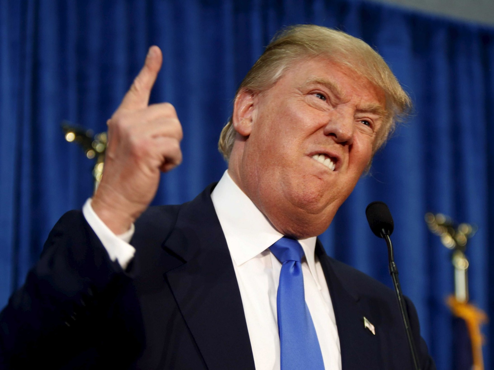
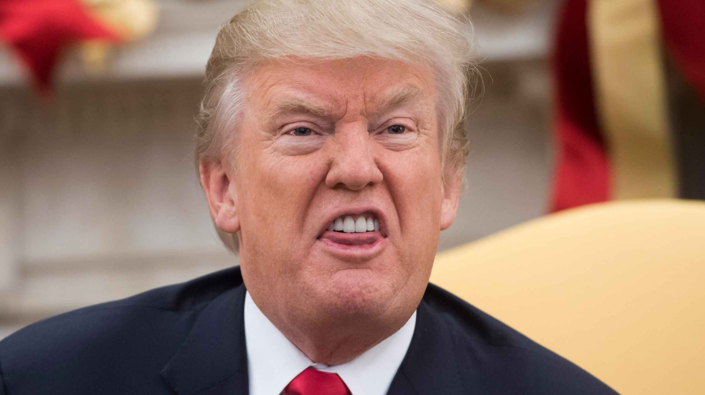

DOCUMENTO DE ESTUDIO
Una mirada histórica y geopolítica
Este sitio presenta de forma visual y organizada el contenido del informe proporcionado. Las afirmaciones históricas y políticas se muestran como parte del planteamiento del documento, sin presentarlas como hechos verificados de manera independiente.
01 · MATERIAL MULTIMEDIA
Imágenes y video
Material visual relacionado con el tema de la página. Las imágenes fueron proporcionadas para este proyecto y el video se reproduce directamente desde YouTube.


01 · RESUMEN TEMÁTICO
Los cuatro ejes principales
Caída y fragmentación
El informe interpreta el colapso del Imperio español como el resultado de un proceso prolongado de conflicto con el Imperio británico y sostiene que la fragmentación posterior debilitó a los territorios hispanoamericanos.
La Leyenda Negra
Se presenta como una narrativa de propaganda que habría contribuido a desacreditar la historia española y a generar rechazo hacia las propias raíces culturales de Hispanoamérica.
Contrastes civilizatorios
El texto contrapone una tradición hispana asociada al catolicismo y al mestizaje con una tradición anglosajona enfocada en producción, ahorro, disciplina económica y comercio.
Economía y soberanía
El Real de a Ocho aparece como símbolo de la antigua importancia económica del mundo hispano. El informe relaciona la independencia con endeudamiento y dependencia financiera posterior.
TRADICIÓN HISPANA
Una identidad compartida
Según el informe, la tradición hispana se caracteriza por una visión trascendente y humana de la vida. El catolicismo es presentado como un elemento que facilitó el mestizaje.
- Lengua e historia comunes
- Tradición católica
- Mestizaje cultural y biológico
- Identidad transnacional
MUNDO ANGLOSAJÓN
Comercio y poder económico
El documento describe el modelo anglosajón como orientado a la producción, el ahorro, la disciplina económica y el comercio.
- Producción y ahorro
- Disciplina económica
- Comercio internacional
- Influencia geopolítica
02 · ECONOMÍA Y SOBERANÍA
El Real de a Ocho
8R
El informe identifica al Real de a Ocho como una moneda de plata del mundo hispano, acuñada principalmente en Nueva España.
La guía también sostiene que, después de las independencias, Hispanoamérica pasó de una posición económica fuerte a una situación de endeudamiento.
03 · PROCESO HISTÓRICO
Conceptos conectados
- Imperio español: construcción de una estructura política y cultural compartida.
- Conflicto geopolítico: el informe destaca la rivalidad con el mundo británico.
- Independencias: proceso de separación que el documento interpreta como una fractura.
- Fragmentación: aparición de numerosos Estados con menor capacidad de negociación conjunta.
- Siglo XXI: propuesta de recuperar cooperación cultural y económica.
04 · PROPUESTA
Hacia una unión hispana
El documento plantea una unión cultural, económica y aduanera entre países hispanohablantes. La finalidad propuesta sería negociar desde una posición de mayor fuerza frente a grandes potencias como Estados Unidos y China.
05 · REPASO
Cuestionario de estudio
1. ¿Cuál es la diferencia principal entre el modelo de imperio de España y el de Inglaterra?
El informe describe a España como un imperio que construía civilización y se establecía mediante mestizaje y religión; a Inglaterra la caracteriza como un modelo centrado en comercio y extracción.
2. ¿Qué papel jugaron las élites criollas y las logias masónicas?
El texto atribuye a sectores criollos ambiciones económicas y sostiene que algunas figuras independentistas habrían tenido vínculos con logias y con intereses británicos.
3. ¿Cómo influyó la fe católica en el mestizaje?
Según el documento, la concepción de igualdad humana ante Dios favoreció la mezcla entre españoles, indígenas y distintos pueblos.
4. ¿Qué es el Real de a Ocho?
Una moneda de plata española acuñada en América que el informe presenta como una referencia global de la economía entre los siglos XVI y XIX.
5. ¿Por qué el texto considera las independencias un "engaño"?
Porque las interpreta como procesos que terminaron en fragmentación, endeudamiento y subordinación a intereses externos.
6. ¿Cuál es la crítica a "Las venas abiertas de América Latina"?
El informe critica que esa obra, según su interpretación, enfatiza la intervención inglesa y omite la responsabilidad de sectores hispanoamericanos.
7. ¿Qué relación establece con las Malvinas y el norte de México?
El texto vincula la fragmentación política con una menor capacidad para defender territorios.
8. ¿Cuál es la crítica a la Guerra de los Pasteles?
Se critica la versión simplificada que reduce el conflicto a una cuenta de restaurante y se propone observar sus motivaciones geopolíticas.
9. ¿Qué propuesta se plantea para negociar con EE. UU. o China?
Crear una unión hispana cultural, económica y aduanera.
10. ¿Cómo se describe el impacto de la Ilustración y el nacionalismo?
El documento los presenta como discursos que habrían contribuido a reemplazar una identidad política y religiosa común por la fragmentación.
06 · PARA PROFUNDIZAR
Temas de ensayo sugeridos
La Leyenda Negra
Analizar su persistencia en la educación contemporánea y su relación con la identidad hispanoamericana.
Extracción vs. construcción
Comparar la administración virreinal con la gestión contemporánea de los recursos naturales.
Religión y cohesión
Discutir el papel del catolicismo en la construcción de una identidad transnacional.
07 · CONCEPTOS
Glosario
Real de a Ocho
Moneda de plata española acuñada en América.
Mestizaje
Mezcla biológica y cultural considerada central para la identidad de Hispanoamérica.
Quinto Real
Impuesto del 20% sobre la producción minera.
Doctrina Monroe
Principio de "América para los americanos".
Monarquía Universal
Concepto de unidad política y religiosa asociado al Imperio español.
Criollos
Descendientes de españoles nacidos en América.
Hispanidad
Civilización compartida basada en lengua española, tradición católica e historia común.
Nota de lectura: esta página organiza el informe proporcionado por el usuario. Las interpretaciones históricas, políticas y geopolíticas corresponden al contenido de ese documento.